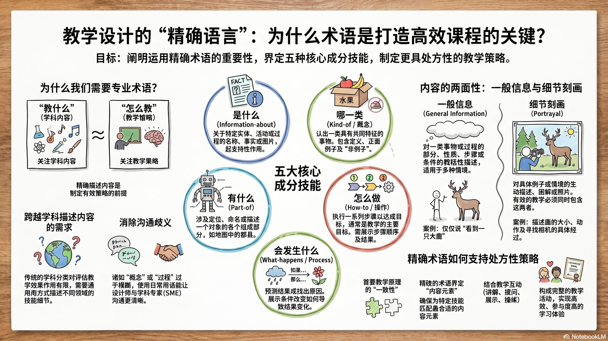
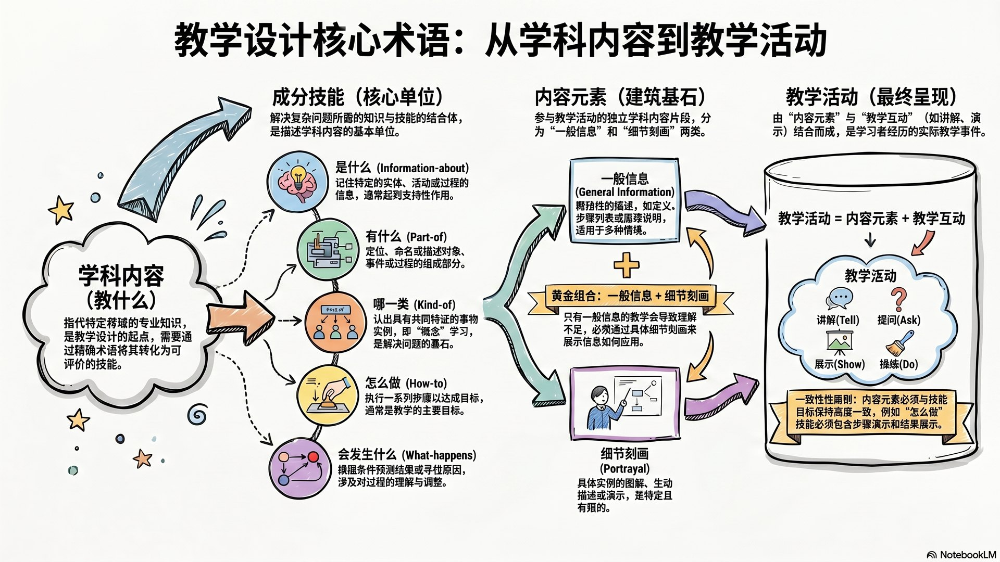
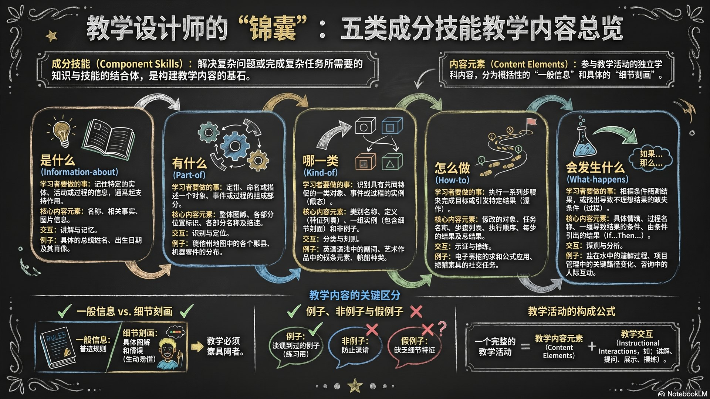
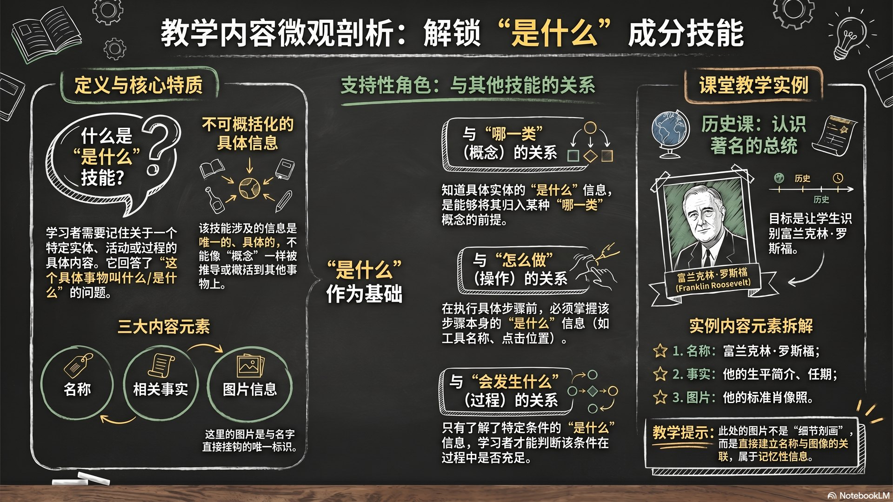
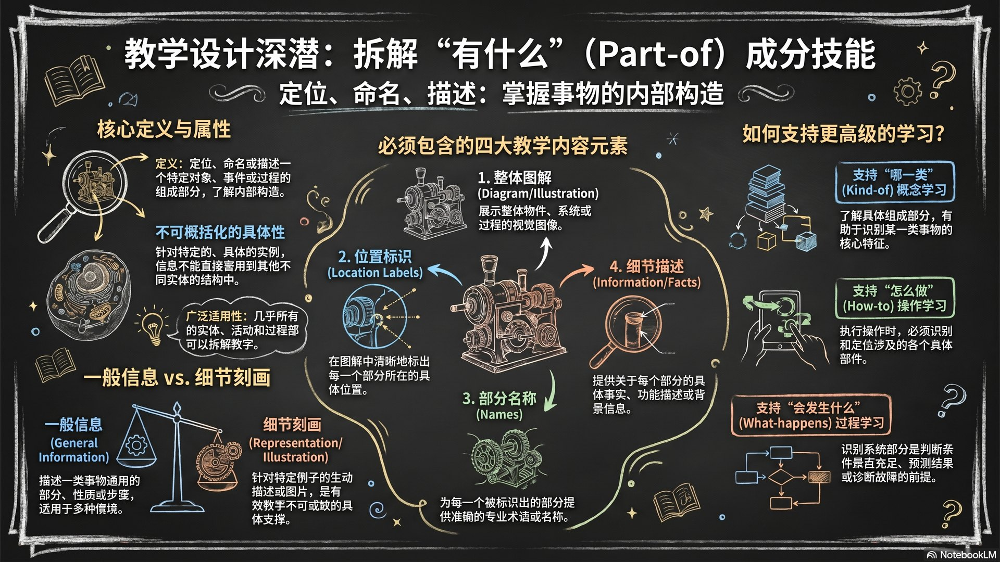
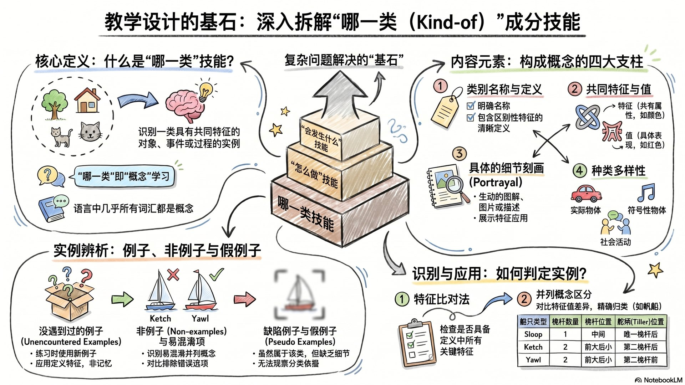
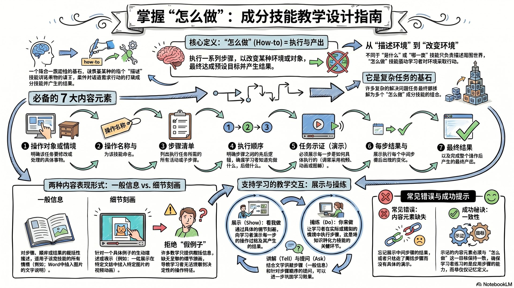
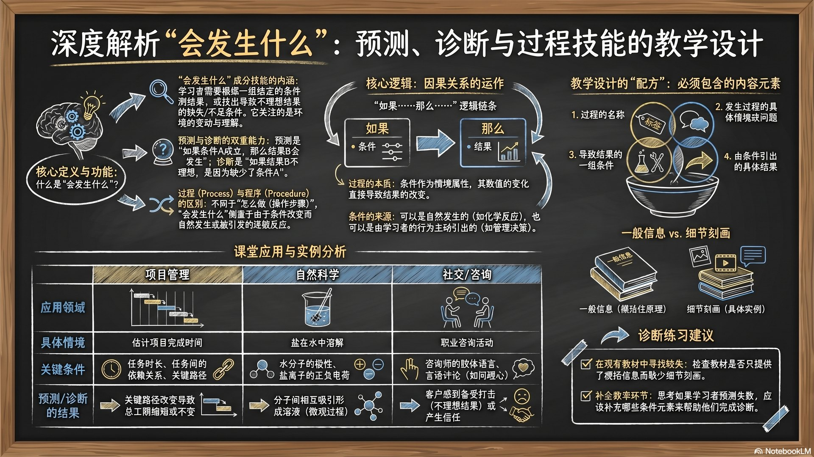

本课要解决的问题
这一章训练教学设计者用稳定、精确、可迁移的语言描述学科内容。只有先说清楚“教什么”，后面才有可能选择合适的“怎么教”。
为什么需要精确术语学科内容如何拆解五类成分技能内容元素与教学活动主题导航
1. 课程总览
五类成分技能
| 类型 | 学习者要能做到 | 典型内容元素 |
|---|---|---|
| 是什么 | 记住具体实体、活动或过程的信息 | 名称、事实、描述、背景 |
| 有什么 | 定位、命名、描述整体中的组成部分 | 部分名称、位置、功能、描述 |
| 哪一类 | 识别一类事物的实例 | 共同特征、例子、非例子 |
| 怎么做 | 按步骤执行活动并产生结果 | 步骤、条件、提示、错误处理 |
| 会发生什么 | 根据条件预测结果或诊断缺口 | 条件、过程、结果、因果关系 |
互动总览
课堂用法：让学生先判断学习目标属于哪类成分技能，再讨论它需要哪些内容元素。

2. 授课讲义
授课讲义
点击任一讲义页可全屏查看。
3. 核心术语关系
学科内容
指“教什么”。教学设计关心的不只是学科名称，更是内容内部有哪些知识与技能成分。
成分技能
解决复杂问题或完成复杂任务所需的知识和技能组合。本章用五类成分技能描述大多数学科内容。
内容元素
参与教学活动的每个独立学科内容。不同成分技能需要不同的内容元素。
教学活动
教学模式与内容元素的结合。常见教学交互包括讲解、提问、展示、操练。


4. 是什么：information-about
定义
“是什么”要求学习者记住关于某个具体实体、活动或过程的信息。这些信息通常不能被概括化，常作为其他技能的支持材料。
教师提示：不要把所有事实记忆都当成主要教学目标。它经常服务于概念识别、步骤执行或过程判断。
形成性评量
题目：下列哪一个最符合“是什么”成分技能？
答案：B。“是什么”关注具体对象的信息。

5. 有什么：part-of
定义
“有什么”要求学习者识别一个对象、事件或过程的组成部分，并能说明每个部分的名称、位置和描述。
形成性评量
题目：“指出引擎中各部件的位置和名称”主要属于哪类成分技能？
答案：C。它关注整体中的部分、位置与名称。

6. 哪一类：kind-of / 概念
定义
“哪一类”要求学习者识别一类对象、事件或过程的实例。关键是共同特征、变化例子和非例子。
形成性评量
题目：设计“哪一类”教学时，最重要的是提供什么？
答案：A。概念学习依赖共同特征和例子/非例子的对比。

7. 怎么做：how-to / 操作
定义
“怎么做”要求学习者执行一系列活动，以完成目标并产生结果。它通常是教学的主要目标。
形成性评量
题目：“按照流程完成一次教学目标分析”主要属于哪类成分技能？
答案：D。它要求执行一系列步骤并得到结果。

8. 会发生什么：what-happens / 过程
定义
“会发生什么”要求学习者根据一组条件预测结果，或诊断为什么没有得到理想结果。重点在条件、过程和结果之间的关系。
形成性评量
题目：“给定若干条件，判断实验结果为什么失败”属于哪类成分技能？
答案：B。它要求根据条件诊断结果。

9. 课堂速查与自学视频
是什么
具体信息
具体信息
有什么
组成部分
组成部分
哪一类
共同特征
共同特征
怎么做
步骤操作
步骤操作
会发生什么
条件结果
条件结果
一句话判断法
如果学习者要“记住事实”，多半是“是什么”；要“指认部分”，是“有什么”；要“识别类别”，是“哪一类”；要“按步骤完成”，是“怎么做”；要“预测或诊断结果”，是“会发生什么”。
如果播放器加载较慢，可直接打开：B 站视频链接